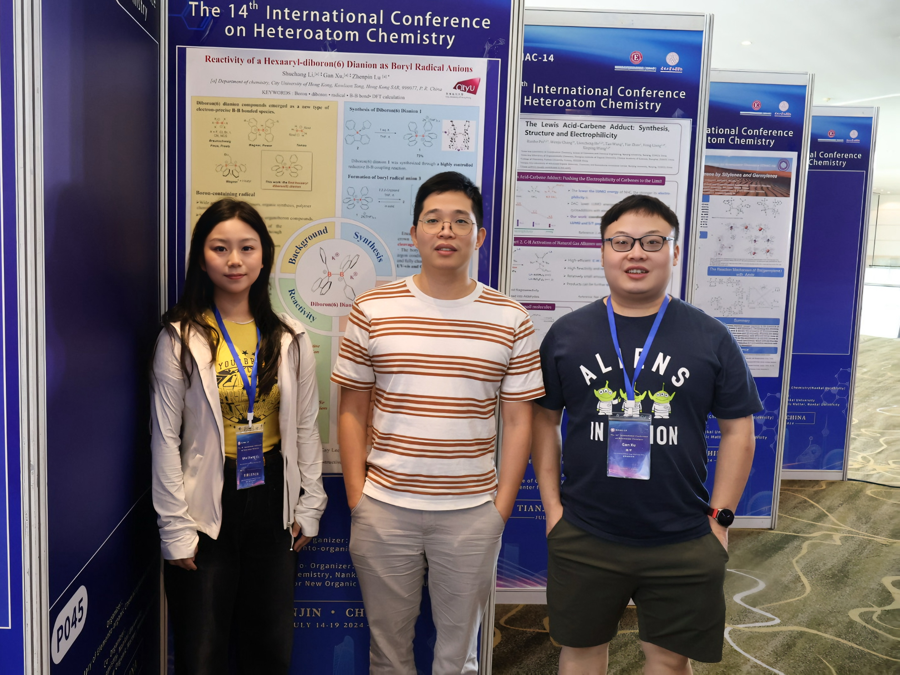
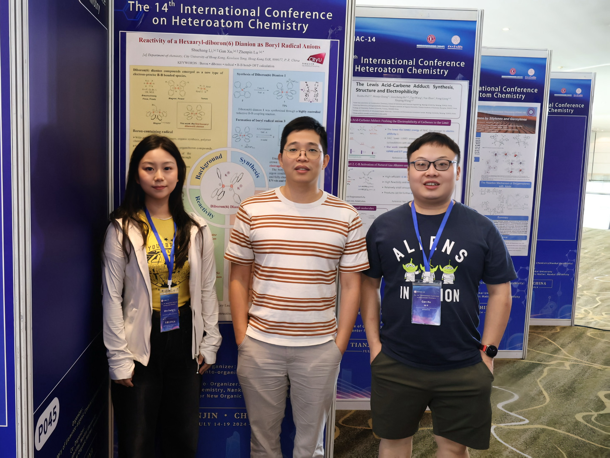
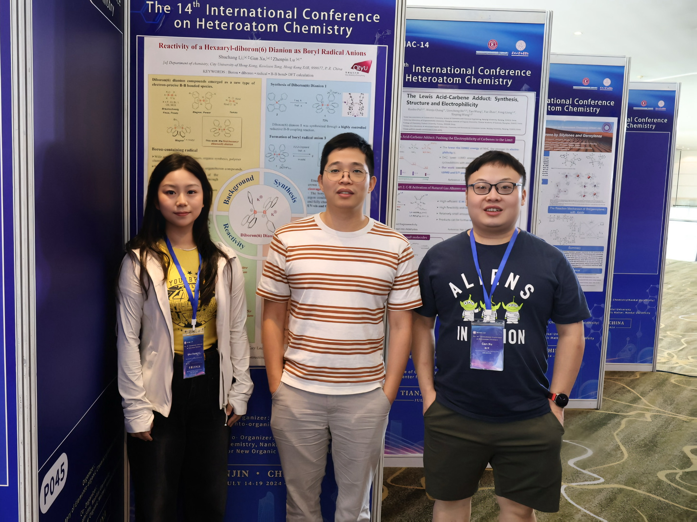

Prof. Lu, Dr. Gan and Shuchang attended the 14th International Conference on Heteroatom Chemistry (ICHAC-14) in Nankai University, Tianjin, China. Prof. Lu gave a nice speak in titled " Reduction of Li+ with a Borate Anion", and Shuchang was presented the "Out Standing Poster Award".

17-21
04/2024
Prof. Lu and Haokun attended the the 49th International Exhibition of Inventions of Geneva (IEIG), winning Bronze Medal pirze.
 
